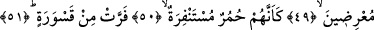
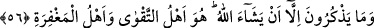

HÂLA ÖĞÜTTEN
YÜZ ÇEVİRİYORLAR?
48. Artık şefâatçilerin şefâati onlara fayda vermez.
49. Böyle iken onlara ne oluyor ki, (hâla) öğütten yüz çeviriyorlar?
50. Yaban eşekleri gibi
51. Arslandan ürküp kaçan
52. Daha doğrusu onlardan her biri, kendisine, (önünde) açılmış sahifeler (ilâhî
vahiy) verilmesini istiyor.
53. Hayır! Aslında onlar âhiretten korkmuyorlar.
54. Asla (düşündükleri gibi değil)! Bilsinler ki bu, gerçekten bir ikazdır!
55. Dileyen ondan (düşünüp) öğüt alır.
56. Bununla beraber, Allah dilemeksizin onlar öğüt alamazlar. Sakınılmaya lâyık
olan da O’dur, mağfiret sâhibi de O’dur.
Artık “şefâatçilerin şefâati onlara fayda vermez.” Yâni peygamberler, melekler ve
başkalarının, onlara şefâat etmek üzere farz-ı muhal bir arada toplanmaları mümkün
olsa, onlara fayda vermez. Bu âyetten maksad; yukarda sıralanan kişilerin onlara şefâat
edecekleri ve şefâatlerinin de kabul edilmeyeceği değildir. Çünkü kıyâmet günü şefâat
izne ve şefâat edilecek kişinin şefâate uygun olmasına bağlıdır. Eğer şefâat kendisine
izin verilen kişiden şefâate uygun olan şahsa yapılacak olursa bu kabul olunur. Kâfire
gelince o şefâate uygun değildir ve kendisine şefâat edilmesine izin verilmeyecektir. O
hâlde kıyâmet günü kâfir için ne şefâat vardır ve ne de fayda söz konusudur.
Bu âyet-i kerîme o gün müminlerin âsîlerine şefâat edileceğine ve bunun kendilerine
fayda vereceğine delildir. Çünkü böyle olmasaydı o gün kâfirlere şefâatın fayda
vermeyeceğinin ifâde edilmesi boşuna ve anlamsız olurdu.
İbn Mes’ud (r.a.); “Melekler, peygamberler, şehidler, sâlih kullar ve bütün müminler
şefâat ederler. Cehennemde sâdece sıralanan dört grup kalır” der ve yukarda zikredilen
“namaz kılanlardan değildik, yoksulu doyurmuyorduk, bâtıla dalanlarla birlikte